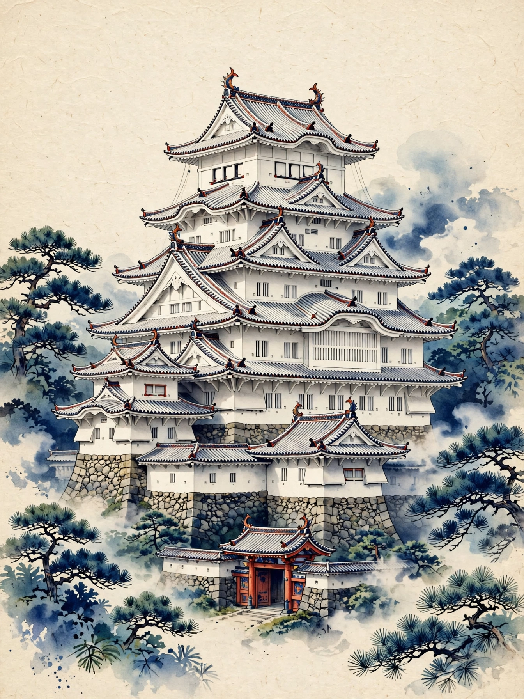
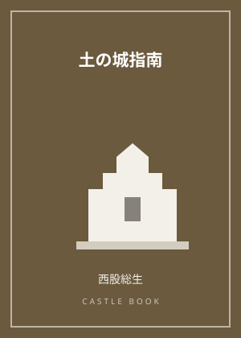

城めぐりの持ち物と歩き方｜山城で困らない初心者ガイド

城めぐりは、平地の城と山城で必要な準備が大きく変わります。平城や平山城は街歩きの延長で楽しめますが、山城は軽い登山です。
まず靴。山城では石段や土の斜面を歩くため、滑りにくいトレッキングシューズや運動靴が必須です。サンダルや革靴では、竪堀や曲輪跡を前に引き返すことになりかねません。水分と帽子、雨具も忘れずに。山城の多くは日陰が少なく、売店もありません。
歩き方のコツは、最初に全体像をつかむことです。案内板の縄張図で本丸・二の丸・虎口の位置を確認し、「攻める側ならどこから入るか」を考えながら進むと、堀や土塁の意味が立体的に見えてきます。土の城の歩き方を解説した本で予習しておくと、現地での発見が増えます。
無理は禁物です。体力に合わせて城を選び、天候が悪い日は無理に登らないこと。検定の勉強で得た知識は、こうした実地の歩きでこそ自分のものになります。
同じテーマの記事：
この記事のおすすめ本

表紙イメージ（実際の表紙とは異なります）
PR 専門書
土の城指南
著者：西股総生
石垣の城だけでなく、土塁と堀で守る中世の「土の城」の歩き方を指南。縄張図の読み方や城跡の見方が身につき、山城歩きがぐっと深くなります。
Amazonで見るKindle版あり／価格はAmazonでご確認ください／リンク先：Amazon.co.jp

表紙イメージ（実際の表紙とは異なります）
PR ガイド・スタンプ帳
日本100名城に行こう 公式スタンプ帳つき
著者：公益財団法人 日本城郭協会
日本100名城の公式ガイドブック。1城1ページで見どころを解説し、巻末がそのまま公式スタンプ帳になります。スタンプラリーを始めるならまずこの一冊。
Amazonで見る価格はAmazonでご確認ください／リンク先：Amazon.co.jp
当サイトは、Amazon.co.jpを宣伝しリンクすることによってサイトが紹介料を獲得できる手段を提供することを目的に設定されたアフィリエイトプログラムである、Amazonアソシエイト・プログラムの参加者です。価格・在庫はリンク先でご確認ください。